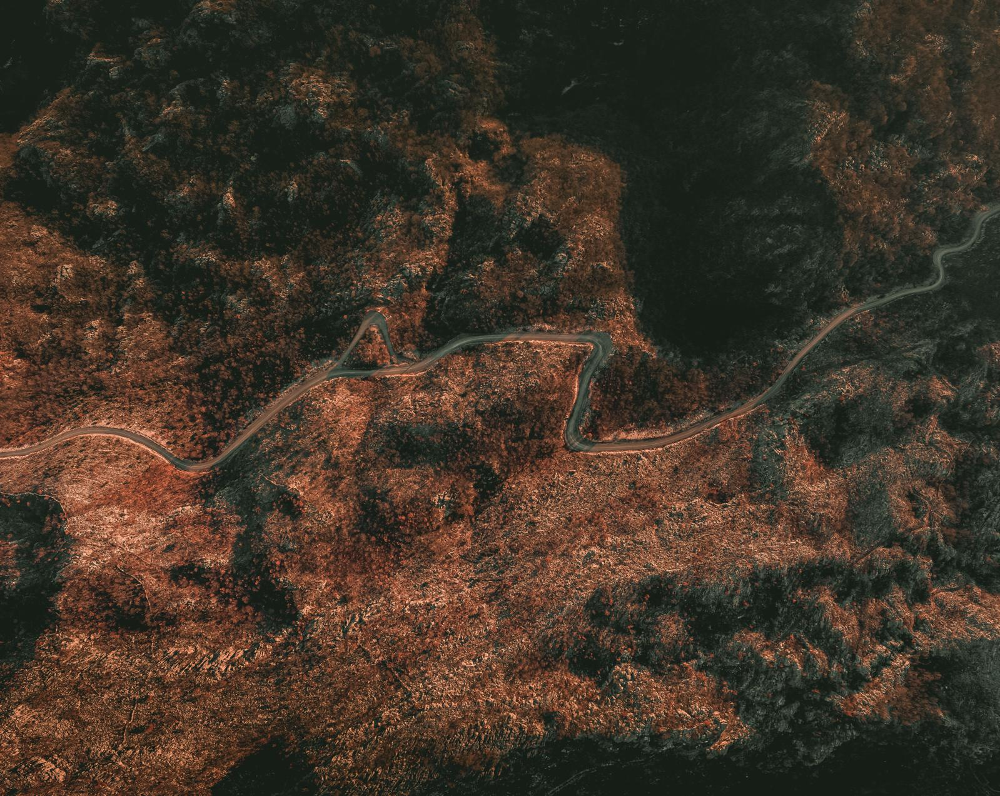

01
Rapid change detection
Compare imagery across time and surface exactly what changed — new construction, damage, movement, or progress — in minutes, not weeks.
Geospatial change detection · decision intelligence
Discover what imagery and terrain can tell you about the world below — then take it anywhere, online or off.
Now engaging select defense and commercial partners.
Imagery has never been more abundant. Turning it into a decision you can trust, in time, is still hard. That's the gap Scrye closes.
—Why it stands out
Most tools hand you data.
We hand you a decision.
01Capabilities
Compare imagery across time and surface exactly what changed — new construction, damage, movement, or progress — in minutes, not weeks.
Scan, query, and ingest imagery and elevation from many sources into one clear, current picture.
Every output carries a clear measure of confidence. You always know exactly how far to trust the answer.
Runs in the cloud or fully offline on the device — the same answers whether you're online or cut off in the field.
Built for the people making the call, not just GIS experts. Clear answers anyone on the team can read and act on.
Findings flow cleanly into the tools and devices already in use, in the formats they already speak.
02Applications
The same engine — rapid change detection and confidence-graded geospatial intelligence — wherever the question is “what changed, and what does it mean?”
Situational awareness and terrain understanding for teams operating in contested, austere, and disconnected environments — at the speed of the mission.
Assess property condition and how it changes over time to support underwriting and faster, evidence-based claims — one input among several, never the whole story.
Track pit progress, stockpiles, and site activity over time — independent ground truth for operations, investment diligence, and ESG monitoring.
Monitor construction and critical infrastructure, and assess damage after a disaster — at the speed events demand.
03Approach
Point it at your data. It catalogs what's there, classifies it, and tells you plainly what analysis is possible — and at what confidence.
Run the questions that matter against the best available source, with a confidence measure attached to every result.
Package decision-ready products for whoever acts on them — in the field or at a desk — in the formats your systems already understand.

—Offline-first
No signal?
Full capability.
04Principles
We build for the moment the data is incomplete, the network is gone, and the decision can't wait.
Confidence is a first-class output, never an afterthought.
Designed to perform with the network as a luxury, not a requirement.
Open formats in, open formats out. No lock-in at the edge.
Built around the person making the call, under real-world constraints.
05About
A small, focused team building decision-grade geospatial tools for everyone who has to make a call from imagery — whether they're at the tactical edge or behind an enterprise desk.
Our work sits at the intersection of geospatial analysis, intelligence tradecraft, and disciplined software delivery. We have planned and run operations in the field, built and shipped mission systems, and felt first-hand the gap between the data available and the decision required.
That experience shapes a single conviction: a tool used at the hardest moment must be honest about what it knows. Everything we build follows from that. Read more about us →
06Contact
We work with a select group of partners — across defense and commercial alike — who need to turn imagery into decisions they can stand behind.